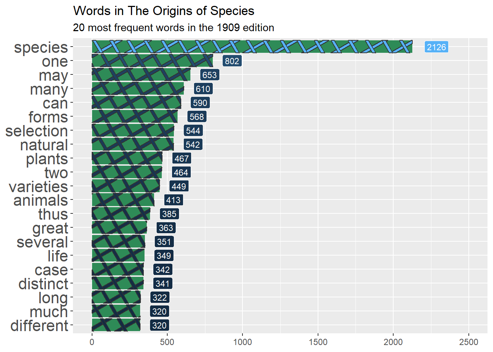
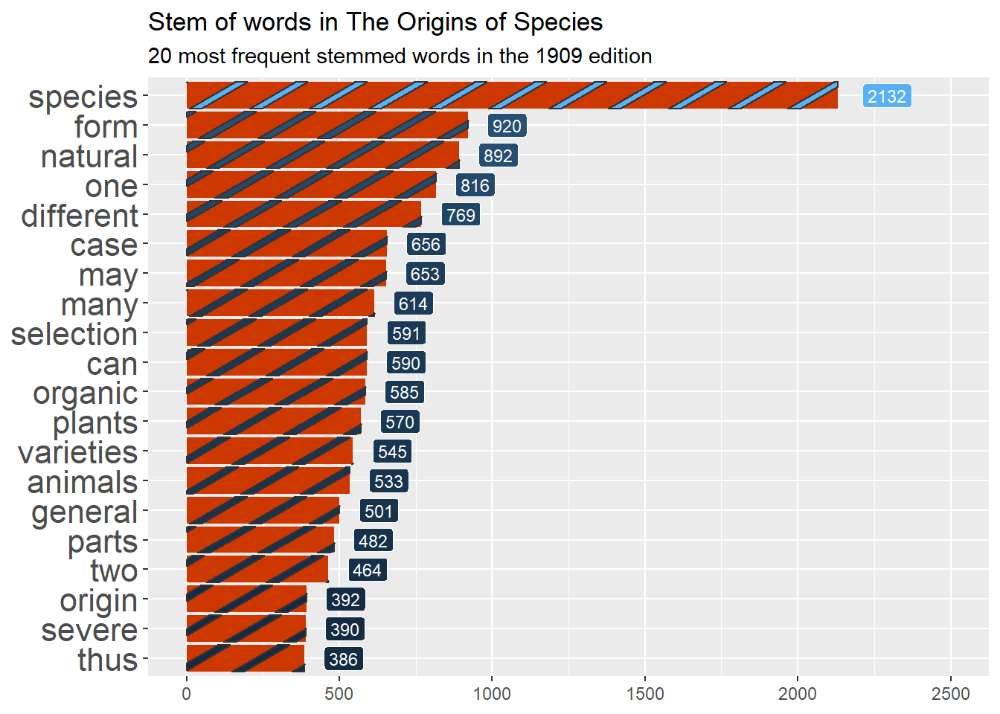
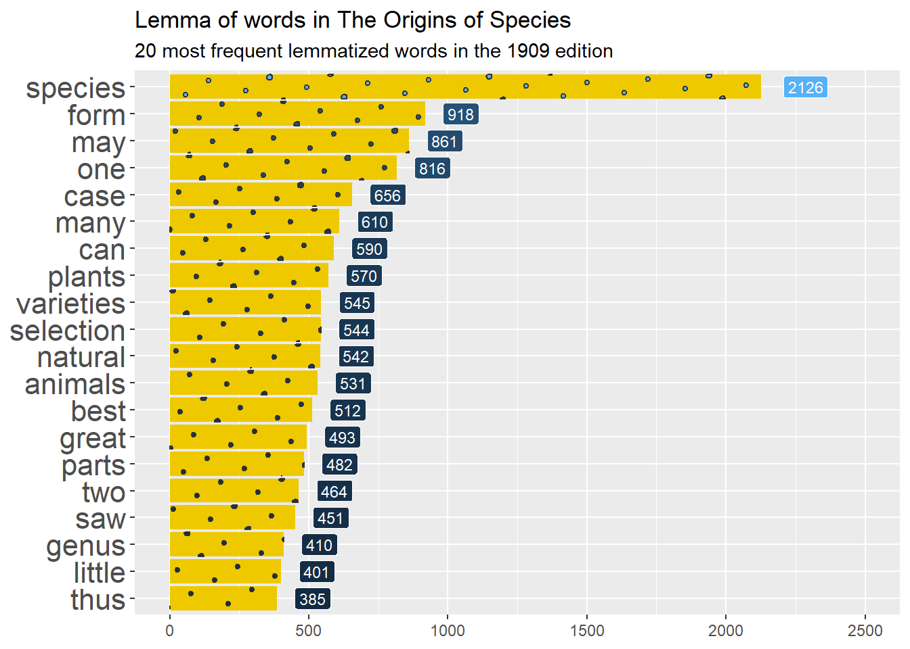
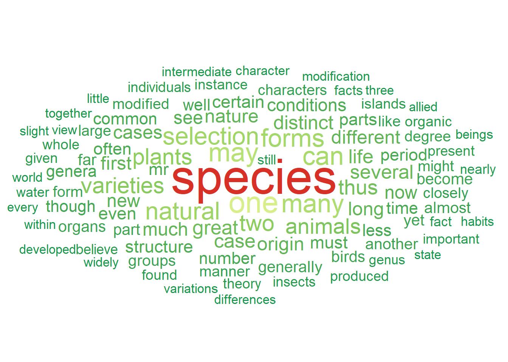
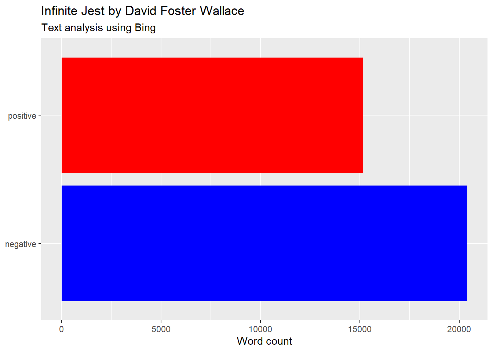
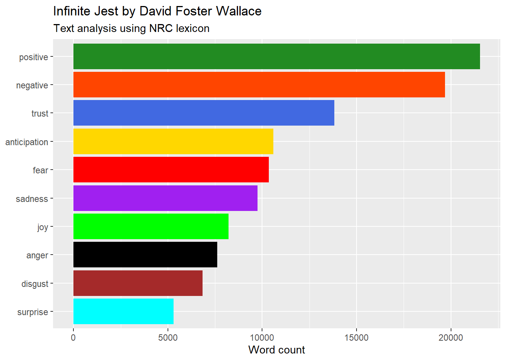

- 1
-
Read the file into R with the function
pdf_text() - 2
- Eliminate all blank spaces in the text
Data from words 📚
Learn how to transform information stored in text as data you can analyse and visualise
text
sentiment
pdf
book
regex
wordcloud
Import, clean, tokenise and stem text, score its sentiment, and learn how functions in R make your work so much easier.
“For every complex problem there is an answer that is clear, simple, and wrong.”
–H.L. Mencken
Text analysis is how you convert prose into a numerical analysis. Examples of applications of text analysis are Google NGrams and translators like DeepL. It is also a building block for AI applications, like the recently released ChatGPT.
In this session we will focus on retrieving, cleaning and visualising text data.
Level: Intermediate · Time: ~60 min · Prerequisites: Everything in its right place · Tools: tidytext, stringr, dplyr, ggwordcloud, pdftools
You will learn to
- Import text from a PDF and clean it into tidy, one-word-per-row data.
- Use regular expressions to find and remove patterns in text.
- Reduce words to stems and lemmas, and count what’s left.
- Score sentiment and build a wordcloud from word frequencies.
- Join a sentiment lexicon to your words and track emotion through a whole book.
PART I: Text to data
To get us started, we need to learn how to transform and clean text data. We’ll use an example of a book as a warm up.
Breaking down “The Origin of Species”
We’ll use Charles Darwin’s “On the Origin of Species by Means of Natural Selection, or the Preservation of Favoured Races in the Struggle for Life” to illustrate how to go from text to data.
We first download a PDF copy of the book online (like this one). Then, using the pdftools package, we can import the text into R. PDF is a terrible format to store data, you’ll see why soon.
TipRegular expressions, regex
Regular expressions are a way to specify or search for patterns of strings using a sequence of characters. By combining a selection of simple patterns, we can capture quite complicated combinations of strings.
Read this appendix of Supervised Machine Learning for Text Analysis in R and use regexr to learn how to draw the text data you need using regular expressions
Working with text-as-data: Tokenization, stopwords, stemming
Before we can actually use the text to analyse it, we need to perform a few operations. The first is to create tokens, which is basically the unit of measurement we choose for our text analysis. Token can be words, characters, sentences, paragraphs, n-grams, you name it. To tokenize the book, we’ll use a function from the tidytext package that does all the heavy lifting for us.
TipA sliver of regex
regex gives headaches, and the 2nd page of the stringr cheatsheet is your ibuprofen. There are a few important operations in regex you should remember:
Special metacharacters
\.Represents a period. To match a period, type\\.\\Represents a single backslash. To match two backslashes, type\\\\\"Represents a single quotation sign.\nNew line
Anchors
^Start of the string$End of the string\\bEmpty string at either edge of a word
Stop! Removing words we don’t care much about
We will then extract words from the remaining data that we won’t need. These are called stopwords, and include a list of articles, prepositions and other words that we are not super interested in analysing. We will remove the words using the anti_join() function, which removes any common elements from two databases.
Looking for the root and a bit of linguistics
Finally, we will look at the stem of the remaining words, as we want to avoid duplicates from plurals and the like. For this we will use the SnowballC package, which has a handy function to extract the root of words. We also do lemmatization, or identifying the dictionary form of the words based on linguistics and grouping them together using the textstem package.
We won’t go into the details, but check the differences between the stem and lemma results below to pick your curiosity:
library(pdftools)
library(tidytext)
library(tidyverse)
library(hunspell)
library(SnowballC)
library(textstem)
# Tokenization - Turn all text into a data frame of words ####
toos_df <- the_origins_of_species |>
3 tibble::as_tibble() |>
4 tidytext::unnest_tokens(input = "value", output = "word", token = "words", to_lower = TRUE)
# Stopwords - Remove them with anti_join ####
5stopwords::stopwords(language = "en")
# Now let's remove all the stop words from our data and stem the text ####
toos_df |>
6 dplyr::anti_join(stopwords::stopwords(language = "en") |>
as_tibble(),
by=c("word"="value")) |>
7 dplyr::mutate(stem = SnowballC::wordStem(word),
lemma = textstem::lemmatize_words(word))- 3
- Make into a database
- 4
-
Tokenize into words using the
unnest_tokens()function. We also make the text lower-case. - 5
- See the list of stopwords in each language
- 6
-
Remove all the stopwords from the list using
anti_join(), which removes all words common in both datasets. - 7
- Identify the stem of each word, to avoid counting conjugation duplicates, and lemmatization that uses linguistics to create lemmas, the canonical or dictionary forms of word.
[1] "i" "me" "my" "myself" "we"
[6] "our" "ours" "ourselves" "you" "your"
[11] "yours" "yourself" "yourselves" "he" "him"
[16] "his" "himself" "she" "her" "hers"
[21] "herself" "it" "its" "itself" "they"
[26] "them" "their" "theirs" "themselves" "what"
[31] "which" "who" "whom" "this" "that"
[36] "these" "those" "am" "is" "are"
[41] "was" "were" "be" "been" "being"
[46] "have" "has" "had" "having" "do"
[51] "does" "did" "doing" "would" "should"
[56] "could" "ought" "i'm" "you're" "he's"
[61] "she's" "it's" "we're" "they're" "i've"
[66] "you've" "we've" "they've" "i'd" "you'd"
[71] "he'd" "she'd" "we'd" "they'd" "i'll"
[76] "you'll" "he'll" "she'll" "we'll" "they'll"
[81] "isn't" "aren't" "wasn't" "weren't" "hasn't"
[86] "haven't" "hadn't" "doesn't" "don't" "didn't"
[91] "won't" "wouldn't" "shan't" "shouldn't" "can't"
[96] "cannot" "couldn't" "mustn't" "let's" "that's"
[101] "who's" "what's" "here's" "there's" "when's"
[106] "where's" "why's" "how's" "a" "an"
[111] "the" "and" "but" "if" "or"
[116] "because" "as" "until" "while" "of"
[121] "at" "by" "for" "with" "about"
[126] "against" "between" "into" "through" "during"
[131] "before" "after" "above" "below" "to"
[136] "from" "up" "down" "in" "out"
[141] "on" "off" "over" "under" "again"
[146] "further" "then" "once" "here" "there"
[151] "when" "where" "why" "how" "all"
[156] "any" "both" "each" "few" "more"
[161] "most" "other" "some" "such" "no"
[166] "nor" "not" "only" "own" "same"
[171] "so" "than" "too" "very" "will"
# A tibble: 111,883 × 3
word stem lemma
<chr> <chr> <chr>
1 charles charl charles
2 robert robert robert
3 darwin darwin darwin
4 frs fr frs
5 frgs frg frgs
6 fls fl fls
7 fzs fz fzs
8 ˈdɑːrwɪn ˈdɑːrwɪn ˈdɑːrwɪn
9 12 12 12
10 february februari february
# ℹ 111,873 more rowsNow let’s see the result from the cleaning by plotting the frequency of the words that appear the most in the book using ggplot2 –for words, their stems and also their lemmas. We will start with the original data and, using the pipe, clean it, sort it, slice it and feed it to ggplot. In this case, we want bars/columns to represent the frequency of each word. We’ll use the package ggpattern to style the bars, so we use geom_col_pattern() with pattern options, and geom_label() to add the numeric frequency of the word next to each bar.
Compare the results below, and notice the differences:



Wordclouds with ggwordcloud
Wordclouds are mostly decorative, they are not very informative. They are the pie charts of text data: There will always be a better way to convey the information, but people like them anyway.
To create a wordcloud, we only need to use one new geometry: geom_text_wordcloud(). As arguments we give the label for each word and the weight of the word based on the frequency. we can also change the area in which the wordcloud is created, using the scale_size_area() option and a 3-color diverging palette.
library(tidyverse)
library(ggwordcloud)
library(RColorBrewer)
toos_df |>
dplyr::anti_join(stopwords::stopwords(language = "en") |>
as_tibble(), by=c("word"="value")) |>
dplyr::group_by(word) |>
dplyr::summarise(word_count = n()) |>
dplyr::distinct(word, .keep_all = TRUE) |>
dplyr::slice_max(order_by=word_count, n = 100) |>
ggplot()+
8 ggwordcloud::geom_text_wordcloud(aes(label = word, size = word_count, color=word_count)) +
scale_size_area(max_size = 17) +
scale_color_distiller(palette="RdYlGn", direction=-1)+
theme_minimal()- 8
-
Use the
geom_text_wordcloud()geometry to plot the wordcloud very easily, even adding a variable to weight the size by frequency in the text and color it with a palette.

Sentiment analysis for Infinite Jest
Words have connotations that can be analysed numerically. Evaluating an opinion or emotion in text can be done using sentiment analysis, which we will do for another american novel: David Foster Wallace’s Infinite Jest. To do this, we just need to add a database with negative/positive identifiers for words in English and match them with the data from the book.
We’ll use the lexicon Bing to start, which gives either a single positive or negative association to a large set of words in English.
library(textdata)
library(tidytext)
# Look at the list of words and +/- sentiment ####
tidytext::get_sentiments("bing")# A tibble: 6,786 × 2
word sentiment
<chr> <chr>
1 2-faces negative
2 abnormal negative
3 abolish negative
4 abominable negative
5 abominably negative
6 abominate negative
7 abomination negative
8 abort negative
9 aborted negative
10 aborts negative
# ℹ 6,776 more rowsWith the pipe workflow, we sequence all the steps we did before and join the sentiment lexicon to get a visual summary of the frequency of positive or negative words in this mammoth novel.
Tip
dplyr helper functions
The dplyr package has some useful functions that regex text without a hassle: you can select variables or filter observations based on text.
starts_with: starts with a prefix (same as regex ‘^blah’)ends_with: ends with a prefix (same as regex ‘blah$’)contains: contains a literal string (same as regex ‘blah’)matches: matches a regular expression (write regex here)num_range: a numerical range like x01, x02, x03 (same as regex ‘x[0-9][0-9]’)one_of: variables in character vectoreverything: all variables. Used for reordering.
library(textdata)
library(RColorBrewer)
library(tidyverse)
library(tidytext)
9pdftools::pdf_text(paste0(getwd(),"/infinite_jest.pdf")) |>
10 stringr::str_squish() |>
11 tibble::as_tibble() |>
12 tidytext::unnest_tokens(input = "value", output = "word", token = "words") |>
13 dplyr::anti_join(stopwords::stopwords(language = "en") |>
as_tibble(), by=c("word"="value")) |>
14 dplyr::left_join(get_sentiments("bing"),
by=c("word")) |>
15 dplyr::filter(!is.na(sentiment)) |>
16 dplyr::group_by(sentiment) |>
dplyr::summarise(sentiment_count = n()) |>
# Plot
17 ggplot(aes(x=sentiment,y=sentiment_count,fill=sentiment))+
geom_col(show.legend = FALSE)+
coord_flip()+
labs(x=NULL,y="Word count",
title = "Infinite Jest by David Foster Wallace",
subtitle = "Text analysis using Bing")+
scale_fill_manual(values = c("blue","red"))- 9
-
Import the book into R with
pdf_text(), which returns one character string per page. - 10
-
Collapse repeated whitespace and line breaks into single spaces with
str_squish(). - 11
- Turn the character vector into a tibble, the rectangular shape the rest of the pipeline expects.
- 12
-
Tokenize:
unnest_tokens()breaks each page into one row per word, lowercased. - 13
-
Remove stopwords (“the”, “and”, “of”…) with
anti_join(): keep only the words that do not appear in the stopword list. - 14
-
Attach a sentiment to every word that has one, joining against the Bing lexicon with
left_join(). - 15
-
Words absent from the lexicon came back as
NA–filter them out. - 16
- Group and summarise the count of words by sentiment.
- 17
-
Pipe the summary straight into
ggplot–no intermediate object needed.

The positive/negative lexicon is not very interesting. There is another one called NRC1 which is more nuanced.
Let’s repeat the analysis using this lexicon and draw word frequencies by sentiment group, taking into account that words can have multiple sentiments and will be counted multiple times. Using scale_fill_manual() we can easily assign a color to each sentiment.
TipJoin us! Merging data with
dplyr
Merging data between databases using dplyr is a joy, not a headache. There are several join functions that ease combining datasets based on common variables:
inner_join()returns only the matching rows from both datasets, keeping only the observations with common values in the specified variables.left_join()returns all rows from the left dataset and the matching rows from the right dataset, keeping all observations from the left dataset and only the matching ones from the right dataset.right_join()is similar to left_join(), but it keeps all observations from the right dataset and only the matching ones from the left dataset.full_join()returns all rows from both datasets, keeping all observations from both datasets and filling in missing values with NAs when there is no match.semi_join()returns only the rows from the left dataset that have a match in the right dataset, discarding observations without a match.anti_join()returns all rows from the left dataset that do not have a match in the right dataset. It essentially removes the rows with matching values in the specified variables, keeping only the observations from the left dataset that have no corresponding match in the right dataset.
You can specify the columns for matching using the by argument within the chosen join function to specify the columns that should be used for matching. If you want to join based on a single column named “ID”, you would write: by = "ID". If you want to match on multiple columns, such as “ID” and “Date”, you would write: by = c("ID", "Date")).
library(textdata)
library(RColorBrewer)
library(tidyverse)
library(tidytext)
# NRC lexicon ####
18nrc <- tidytext::get_sentiments("nrc")
# Import book ####
19pdftools::pdf_text(paste0(getwd(),"/infinite_jest.pdf")) |>
20 stringr::str_squish() |>
21 tibble::as_tibble() |>
22 tidytext::unnest_tokens(input = "value", output = "text", token = "words") |>
23 dplyr::anti_join(stopwords::stopwords(language = "en") |>
as_tibble(), by=c("text"="value")) |>
24 dplyr::left_join(nrc,
by=c("text"="word"), multiple="all") |>
25 dplyr::filter(!is.na(sentiment)) |>
26 dplyr::group_by(sentiment) |>
dplyr::summarize(sentiment_count = n()) |>
# Plot
ggplot(aes(x=reorder(sentiment, sentiment_count), y=sentiment_count,fill=sentiment))+
geom_col()+
coord_flip()+
labs(x=NULL,y="Word count",
title = "Infinite Jest by David Foster Wallace",
subtitle = "Text analysis using NRC lexicon")+
theme(legend.position = "none")+
27 scale_fill_manual(values=c(
"positive"="forestgreen",
"negative"="orangered",
"trust"="royalblue",
"anticipation"="gold",
"fear"="red",
"sadness"="purple",
"joy"="green",
"anger"="black",
"disgust"="brown",
"surprise"="cyan")
)- 18
-
Retrieve the NRC sentiment lexicon with
get_sentiments(). Unlike Bing’s positive/negative pair, NRC maps words to ten sentiment categories. - 19
- Import the text into R, as before.
- 20
- Collapse repeated whitespace into single spaces.
- 21
- Turn the character vector into a tibble.
- 22
- Tokenize into one row per word.
- 23
-
Remove all stopwords using
anti_join(). - 24
-
Join the sentiments using
left_join(). A word can carry several NRC sentiments, so we addmultiple = "all"to keep every match, not just the first. - 25
- Filter out all words without a sentiment matched to them.
- 26
- Group and summarise the count of words by sentiment.
- 27
-
Notice how you can customise the colors using
scale_fill_manual(): a named vector of"value" = "color"pairs manually matches each sentiment to a color.

Rejoinder: Narrative progression in Moby Dick 🐋
A fun application of sentiment analysis is tracking the frequency of words by sentiment from beginning to end of a novel. We’ll use Moby Dick as an example, showing with the help of girafe, how the relative frequency of each sentiment in the Bing lexicon changes throughout the novel between positive and negative words.
As you can see below, the book grows progressively more negative, as the cumulative word count by sentiment shows.
library(gutenbergr)
library(tidytext)
library(tidyverse)
library(ggiraph)
moby_dick <- gutenbergr::gutenberg_works(title=="Moby Dick; Or, The Whale") |>
gutenbergr::gutenberg_download(mirror = "http://mirrors.xmission.com/gutenberg/")
# Override and direct download
moby_dick <- readr::read_tsv("http://aleph.gutenberg.org/2/4/8/2489/2489-0.txt") |>
tibble::as_tibble() |>
dplyr::rename("text"=1)
moby_dick_gg <- moby_dick |>
dplyr::mutate(chapter = cumsum(str_detect(text, regex("^chapter ", ignore_case = TRUE)))) |>
dplyr::filter(chapter>0) |>
tidytext::unnest_tokens(input = "text", output = "text", token = "words") |>
dplyr::anti_join(stopwords::stopwords(language = "en") |>
as_tibble(), by=c("text"="value")) |>
dplyr::left_join(tidytext::get_sentiments("bing"),
by=c("text"="word")) |>
dplyr::filter(!is.na(sentiment)) |>
dplyr::group_by(chapter, sentiment) |>
dplyr::summarise(sent_chapter = n()) |>
dplyr::group_by(sentiment) |>
dplyr::mutate(cum_sent = cumsum(sent_chapter)) |>
dplyr::group_by(chapter) |>
dplyr::mutate(dif = (cum_sent - lag(cum_sent))) |>
ggplot(aes(x=chapter))+
geom_path_interactive(size = 3,
aes(y=cum_sent,
data_id = sentiment,
tooltip = sentiment,
color=sentiment))+
geom_col_interactive(data = . %>% filter(!is.na(sentiment)),
fill="royalblue",
aes(y=dif,
data_id = sentiment,
tooltip = dif))+
labs(x="Chapter",
y="Cumulative count of words by sentiment")+
theme_classic()+
theme(legend.position = "top", legend.title = element_blank())+
scale_color_manual(values=c(
"positive"="forestgreen",
"negative"="red2"
)
)
girafe(ggobj = moby_dick_gg,
options = list(
opts_hover_inv(css = "opacity:0.1;"),
opts_tooltip(opacity = 0.8, css ="background-color:blue;color:white"),
opts_zoom(max=4)
)
)🏗 Practice 3: Project Gutenberg
The core tokenise-count-plot loop runs right here in your browser on Jane Austen’s novels; the Gutenberg downloads wait for your own R session.
Key takeaways
- Text becomes data the moment you tokenise it into one row per unit (word, ngram, sentence).
- Stopword removal, stemming and lemmatising all reduce noise before you count anything.
- Sentiment lexicons disagree with each other – always check more than one before trusting a result.
- Joining a lexicon to tokens is just a
dplyrjoin – the same verbs you already use on any table. - Wrapping a repeated analysis in a function (like
book_sentiments()) is what makes it reusable across books.
Footnotes
Saif M. Mohammad and Peter Turney (2013) Crowdsourcing a Word-Emotion Association Lexicon. Computational Intelligence, 29(3): 436-465.↩︎
Citation
BibTeX citation:
@online{amaya2022,
author = {Amaya, Nelson},
title = {Data from Words 📚},
date = {2022-07-31},
url = {https://nelsonamayad.github.io/R4DEV/sessions_workshop/03-text/03-text},
langid = {en}
}
For attribution, please cite this work as:
Amaya, Nelson. 2022. “Data from Words 📚.” July 31. https://nelsonamayad.github.io/R4DEV/sessions_workshop/03-text/03-text.